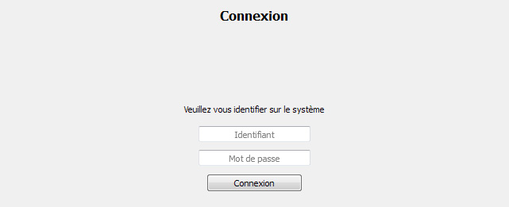

Documentation client
Connexion utilisateur
Lorsqu'un fichier de configuration est présent, le logiciel s'ouvre sur la page de connexion.
L'utilisateur doit alors entrer son identifiant et son mot de passe pour se connecter.

En cas de succès, la liste des mots de passe est affichée. Si l'utilisateur est administrateur, un menu d'administration sera également présent.
En cas d'erreur, un message explicatif est affiché.